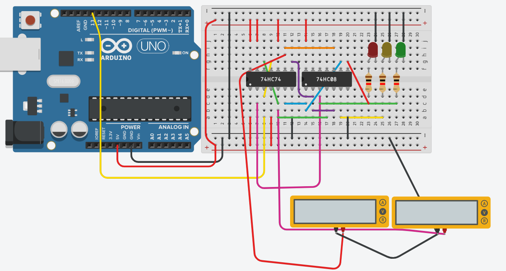

UC00652 · Aula 11 · 20 Jul
Breadboard Física
Semáforo FSM
74HC74 · 7408 · Arduino Uno · Chips TTL reais
Do TinkerCAD para a bancada — montar, testar, verificar
CET · Escola Sicó · Formador: Belmiro Simões Luís
Do TinkerCAD para a Breadboard Real
O circuito é o mesmo — o ambiente muda
2 / 10
O que é igual
- Equações: D1 = !Q1·!Q0 (Gate AND) · D2 = Q0 (fio direto)
- Chips: 74HC74 + 7408 — mesmos pinos, mesmas ligações
- Arduino: mesmo sketch, mesmos pinos (CLK=13, Q0=2, Q1=3)
- LEDs: VERDE · AMARELO · VERMELHO com resistência 220Ω
O que muda
- Fios físicos — sem undo! Verificar antes de ligar alimentação
- Condensadores de desacoplamento 100nF — 1 por chip perto do VCC/GND
- GND do Arduino ligado ao GND da breadboard (obrigatório)
- Resistências de 220Ω nos LEDs — sem elas os LEDs queimam
Regra de ouro da breadboard
⚡ Nunca ligar alimentação sem verificar primeiro.
Antes de ligar o USB ao Arduino:
1. Verificar VCC e GND de cada chip
2. Verificar !CLR e !PR → VCC (pinos 1, 4, 10, 13)
3. Verificar que não há curto-circuito entre linhas + e −
Antes de ligar o USB ao Arduino:
1. Verificar VCC e GND de cada chip
2. Verificar !CLR e !PR → VCC (pinos 1, 4, 10, 13)
3. Verificar que não há curto-circuito entre linhas + e −
Condensador de desacoplamento
100nF (cerâmico) entre VCC e GND de cada chip, o mais perto possível dos pinos de alimentação. Elimina ruído que pode fazer o flip-flop mudar de estado espontaneamente.
A breadboard tem Rails + e − nas laterais. Ligar Arduino 5V à rail + e GND à rail −. Todos os chips partilham estas rails.
Material Necessário
Verificar antes de começar a montar
3 / 10
1×
Arduino Uno
Clock + temporizador por estado
1×
74HC74 (DIP-14)
Dual D Flip-Flop — guarda Q1 e Q0
1×
7408 ou 74HC08 (DIP-14)
Quad AND gate — D1 e LEDs
1×
Breadboard
830 pontos (tamanho standard)
3×
LED (verde, amarelo, vermelho)
5mm, tensão ~2V, corrente 10–20mA
3×
Resistência 220Ω
Para os LEDs — obrigatório!
2×
Condensador 100nF (cerâmico)
Desacoplamento — 1 por chip TTL
~15×
Jumper wires
Macho-macho, várias cores
1×
Cabo USB
Para alimentar o Arduino (5V)
1×
Multímetro
Para verificar tensões e continuidade
💡 Sugestão de cores: vermelho = VCC · preto = GND · amarelo/laranja = clock · verde = sinais de dados
Tabela de Ligações — 74HC74
Convenção: FF1 guarda Q0 · FF2 guarda Q1
4 / 10
74HC74 — todas as ligações
| Pino | Função chip | FSM | Liga a |
|---|---|---|---|
| 14 | VCC | — | 5V (rail +) |
| 7 | GND | — | GND (rail −) |
| 1 | !CLR1 | — | VCC (desativar) |
| 4 | !PR1 | — | VCC (desativar) |
| 10 | !PR2 | — | VCC (desativar) |
| 13 | !CLR2 | — | VCC (desativar) |
| 3 | CLK1 | CLK | Arduino pin 13 |
| 11 | CLK2 | CLK | Arduino pin 13 |
| 2 | D1 | D0_próx | 7408 Gate 1 saída |
| 12 | D2 | D1_próx | Pin 5 (fio direto) |
| 5 | Q1 | Q0 atual | Arduino pin 2 |
| 9 | Q2 | Q1 atual | Arduino pin 3 |
| 6 | !Q1 | !Q0 | 7408 Gate 1 e Gate 3 |
| 8 | !Q2 | !Q1 | 7408 Gate 1 e Gate 2 |
7408 — portas AND
| Gate | Entrada A | Entrada B | Saída → Liga a |
|---|---|---|---|
| 1 | Pin 6 (!Q0) | Pin 8 (!Q1) | Pin 2 (D1) + LED VERDE |
| 2 | Pin 8 (!Q1) | Pin 5 (Q0) | LED AMARELO |
| 3 | Pin 9 (Q1) | Pin 6 (!Q0) | LED VERMELHO |
Atenção — pinos críticos
⚠️ Pino 12 (D2) → Pino 5 (Q0) — fio direto, próximo Q1 = Q0 atual
⚠️ Pino 2 (D1) ← Gate 1 — NÃO confundir com pino 3 (CLK1)!
⚠️ Pino 2 (D1) ← Gate 1 — NÃO confundir com pino 3 (CLK1)!
100nF entre VCC e GND de cada chip — colocar o condensador mesmo ao lado dos pinos 14 e 7.
Montagem — Passo a Passo
Seguir esta ordem para evitar erros
5 / 10
1
Colocar chips na breadboard
74HC74 e 7408 centrados, straddling o canal central. Verificar que todos os pinos encaixaram.
2
Alimentação das rails
Arduino 5V → rail + · Arduino GND → rail −. Verificar com multímetro: deve ler 5V entre + e −.
3
Condensadores de desacoplamento
100nF entre VCC (pin 14) e GND (pin 7) de cada chip — colocar o mais perto possível.
4
VCC e GND dos chips
74HC74: pin 14 → VCC, pin 7 → GND. 7408: pin 14 → VCC, pin 7 → GND.
5
!CLR e !PR ao VCC
74HC74 pinos 1, 4, 10, 13 → VCC. Ativos a LOW — sem VCC o chip fica em reset permanente!
6
Clock — Arduino → 74HC74
Arduino pin 13 → 74HC74 pin 3 (CLK1) e pin 11 (CLK2). Usar fio amarelo/laranja.
7
Fio direto: D2 = Q0
74HC74 pin 12 (D2) → pin 5 (Q0). Próximo Q1 = Q0 atual — fio curto, sem portas.
8
AND gate: D1 = !Q1·!Q0
7408 Gate 1: pin 6 (!Q0) → 7408 entrada A · pin 8 (!Q1) → 7408 entrada B · saída Gate 1 → pin 2 (D1).
9
LEDs com resistências
Gate 1 → 220Ω → LED VERDE. Gate 2 → 220Ω → LED AMARELO. Gate 3 → 220Ω → LED VERMELHO. Todos os cátodos ao GND.
10
Arduino lê Q1 e Q0
Pin 5 (Q0) → Arduino pin 2 · Pin 9 (Q1) → Arduino pin 3. GND comum já está ligado.
O Circuito em Ação
TinkerCAD · Montagem real · Vídeo
6 / 10
Simulação TinkerCAD (Aula 10)

Montagem Presencial (Aula 11)

Vídeo — FSM a funcionar
✅ Do LogiSim ao TinkerCAD à breadboard real — o mesmo circuito FSM em três ambientes!
Verificação com Multímetro
Antes de ligar — depois de ligar
7 / 10
Antes de ligar o USB
✓
Continuidade VCC e GND de cada chip
Modo continuidade (bip): pin 14 do 74HC74 → rail + · pin 7 → rail −. Repetir para o 7408.
✓
!CLR e !PR em VCC
Continuidade: pins 1, 4, 10, 13 do 74HC74 → rail +
✓
Sem curto-circuito rail + / rail −
Resistência entre + e − deve ser > 100Ω. Se bipa, há curto — não ligar!
✓
Fio direto pin 12 → pin 5
Continuidade entre pin 12 (D2) e pin 5 (Q0). Deve bip.
Depois de ligar o USB
✓
Tensão nas rails
Modo tensão DC: rail + → rail − deve ler ~5V. Se lê 0V, o Arduino não está a fornecer VCC.
✓
Tensão nos pinos Q1 e Q0
Pin 5 e pin 9 devem alternar entre ~0V (LOW) e ~5V (HIGH) conforme o estado muda.
✓
LED aceso corresponde ao estado
Q1=0, Q0=0 → VERDE · Q1=0, Q0=1 → AMARELO · Q1=1, Q0=0 → VERMELHO
Se o circuito ficar preso num estado: verificar pino 12 (D2) → pino 5 (Q0). Este fio é o mais crítico!
Debug — Problemas Comuns
O que fazer quando algo não funciona
8 / 10
| Sintoma | Causa provável | Solução |
|---|---|---|
| Nenhum LED acende | VCC ou GND dos chips não ligado | Verificar pins 14 e 7 de cada chip com multímetro |
| Chip fica sempre em reset (Q=0) | !CLR ou !PR não ligados ao VCC | Verificar pins 1, 4, 10, 13 do 74HC74 → VCC |
| Estado AMARELO fica preso | Pin 12 (D2) não ligado ao pin 5 (Q0) | Verificar fio direto pin 12 → pin 5 com continuidade |
| LEDs acendem na ordem errada | Entradas do Gate 2 ou 3 trocadas | Verificar: Gate 2 = !Q1(pin8) AND Q0(pin5) · Gate 3 = Q1(pin9) AND !Q0(pin6) |
| LED não acende ou muito fraco | Resistência em falta ou LED invertido | Verificar polaridade do LED (ânodo → resistência → gate, cátodo → GND) |
| FSM muda estado aleatoriamente | Sem condensador de desacoplamento | Colocar 100nF entre VCC e GND de cada chip |
| Arduino não lê Q1, Q0 correto | GND do Arduino não ligado à rail − | Ligar GND do Arduino ao GND da breadboard |
Testes — Verificar a FSM
Medir e registar Q1, Q0 e LEDs em cada estado
9 / 10
Tabela de verificação de estados
| Estado | Q1 (pin 9) | Q0 (pin 5) | LED | Tempo |
|---|---|---|---|---|
| VERDE | 0V | 0V | Verde ✓ | ~3 s |
| AMARELO | 0V | 5V | Amarelo ✓ | ~0,8 s |
| VERMELHO | 5V | 0V | Vermelho ✓ | ~3 s |
Sequência esperada
VERDE (3 s) → AMARELO (0,8 s) → VERMELHO (3 s) → VERDE → …
// ciclo infinito, sem botões, AVANÇA = 1 sempre
// ciclo infinito, sem botões, AVANÇA = 1 sempre
Verificação com multímetro — preencher
| Estado | Medição Q1 | Medição Q0 | OK? |
|---|---|---|---|
| VERDE | V | V | |
| AMARELO | V | V | |
| VERMELHO | V | V |
🎯 Desafio: alterar o sketch do Arduino para VERDE = 5 s, AMARELO = 1 s, VERMELHO = 4 s. O circuito de chips não muda nada — só o código!
✅ Quando o circuito funciona, fotografar para o portfolio. Parabéns — é uma FSM real em chips TTL!
TP11 — Trabalho Prático
Montagem, verificação e registo
10 / 10
Exercícios obrigatórios
- Ex. 1 — Montar o circuito completo na breadboard seguindo a tabela de ligações
- Ex. 2 — Verificar com multímetro e preencher a tabela de tensões (Q1 e Q0 em cada estado)
- Ex. 3 — Registar a sequência de LEDs e confirmar que a FSM cicla corretamente
- Ex. 4 — Fotografar o circuito montado e identificar cada chip e ligação
Desafio
- Alterar os timings no sketch Arduino: VERDE 5 s · AMARELO 1 s · VERMELHO 4 s
- Adicionar um 4.º LED (azul) que acende sempre que o estado muda (pulso de clock)
Próxima aula — Avaliação Final
Aula 12 · 27 Jul · 2 horas
Avaliação individual — sem consulta a colega.
Formato: FSM completa desde o enunciado até ao circuito.
▸ Diagrama de estados
▸ Tabela de transições
▸ Equações pelo Método MUX
▸ Circuito com chips TTL (papel ou LogiSim)
Avaliação individual — sem consulta a colega.
Formato: FSM completa desde o enunciado até ao circuito.
▸ Diagrama de estados
▸ Tabela de transições
▸ Equações pelo Método MUX
▸ Circuito com chips TTL (papel ou LogiSim)
✅ Hoje é a última aula prática antes da avaliação. Aproveitar para consolidar dúvidas!